Proprietà di chiusura degli insiemi semiricorsivi
In questa sezione si identificano i sottinsiemi di  (vedi Insieme dei numeri naturali MK) con i predicati
(vedi Insieme dei numeri naturali MK) con i predicati  -ari (ovvero con variabili libere), per mezzo degli insiemi di verità.
-ari (ovvero con variabili libere), per mezzo degli insiemi di verità.
Scriveremo indifferentemente 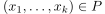 oppure 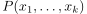 per dire che 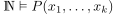.
Proposizione
La collezione degli insiemi semiricorsivi è chiusa per:
- sostituzioni ricorsive (mediante funzioni totali);
- proiezioni (ovvero quantificatori esistenziali);
- intersezioni (ovvero conginuzioni);
- unioni (ovvero disgiunzioni);
- quantificazioni limitate.
Dimostrazione
Sia
 un insieme semiricorsivo, e siano, per
un insieme semiricorsivo, e siano, per  : 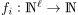 funzioni ricorsive totali. L’insieme 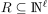 definito da
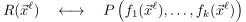
: 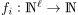 funzioni ricorsive totali. L’insieme 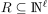 definito da
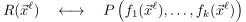è semiricorsivo. Infatti, siccome
 è semiricorsivo, allora esiste ricorsivo tale che
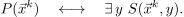
è semiricorsivo, allora esiste ricorsivo tale che
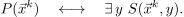Dunque, ponendo 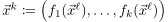 si ha:
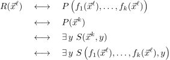ma 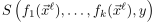 definisce un insieme ricorsivo, quindi la tesi.
Sia semiricorsivo, e sia
 definito da
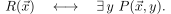
definito da
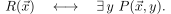 è semiricorsivo. Infatti, siccome è semiricorsivo, allora esiste 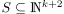 ricorsivo tale che
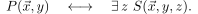
è semiricorsivo. Infatti, siccome è semiricorsivo, allora esiste 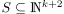 ricorsivo tale che
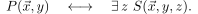Ma allora
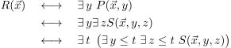e l’insieme definito da 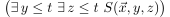 è ricorsivo.
- Come sopra
- Come sopra
- Come sopra